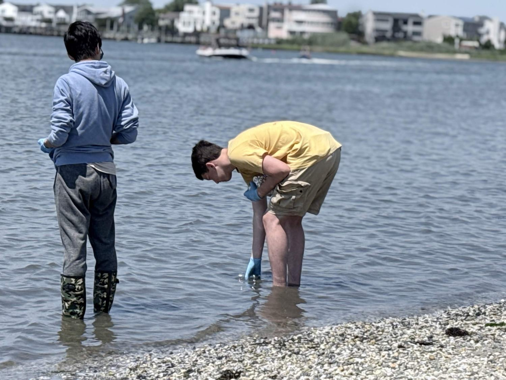
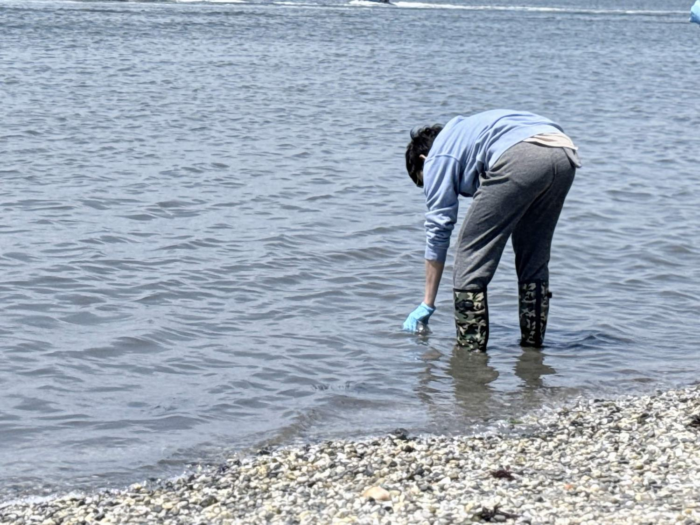
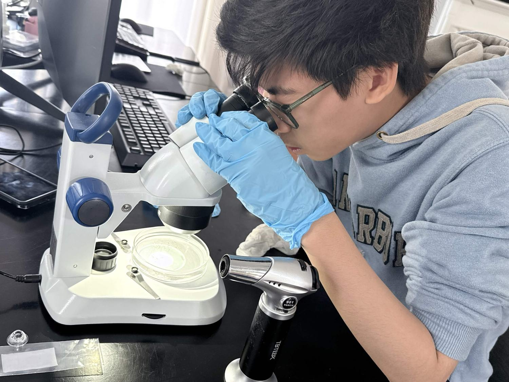
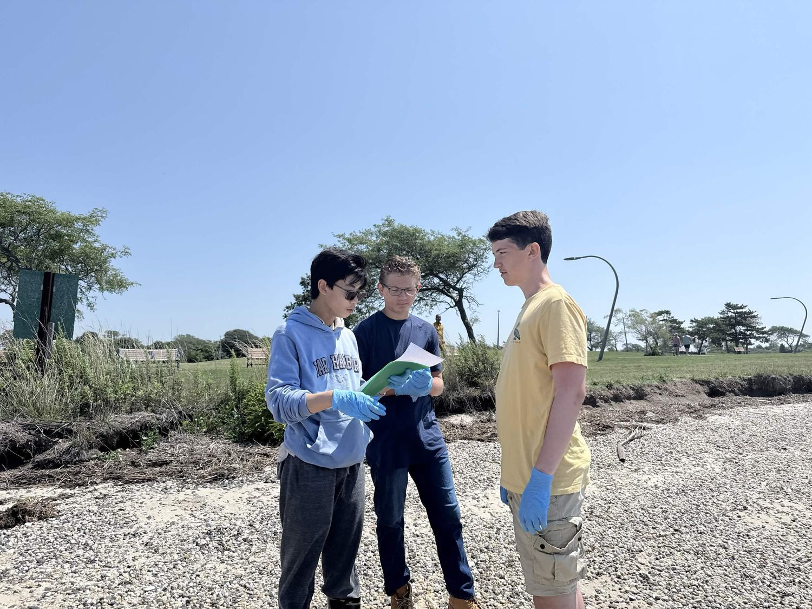

We count what the water carries.
Verdex is a student-run sampling effort recording microplastic particle counts in Long Island's coastal water under one published, version-locked protocol.
Every session, logged.
Sessions appear here whether the counts are interesting or not. Blank results and zero counts stay in the record — removing them would make the dataset a highlight reel.
Counts are visual identifications under stereo microscope, not polymer confirmations. See what this data can't tell you.
One protocol, version-locked.
The Verdex Sampling Standard (VSS) v1.1 is adapted from NOAA marine-debris monitoring guidance. It was locked before Session 1 so that sessions stay comparable to one another.
Collect
Surface grab samples in pre-rinsed glass jars, rinsed three times in source water before filling. Nitrile gloves throughout. Site, time, tide stage, and weather recorded on the field sheet at the moment of collection.
Blank
A procedural blank is opened and handled alongside the real samples at every session from Session 1 forward. If the blank is dirty, the session's counts are reported with that blank value attached — never quietly dropped.
Filter
Samples are vacuum-filtered onto a 100 µm mesh in a covered workspace with foil-lined trays, then dried before examination.
Count
Particles are counted and typed as fiber, fragment, or bead under an Accu-Scope EXS-210-13 stereo microscope, with a hot-needle check on ambiguous particles. Counts and photos are entered into the Verdex sheet the same day.
What this data can't tell you.
No polymer confirmation
Particles are identified visually. Without FTIR or Raman spectroscopy, a fiber counted here is a suspected microplastic, not a confirmed one.
100 µm floor
Anything smaller than the mesh passes through uncounted. True particle loads are higher than the numbers on this page.
Small n
A handful of grab samples at a handful of sites describes those samples. It does not characterize Long Island's water.
Single-team disclosure
All samples to date were collected, processed, and counted by one team using one protocol. No independent laboratory has re-counted a Verdex sample. Inter-observer agreement has not yet been quantified. Any comparison between Verdex sessions and published studies should treat that as an open limitation, not a footnote.
Verdex will not recruit additional teams or sites until it has completed six consecutive protocol-compliant sessions and closed at least one external methodology review. Expansion before that would multiply an unvalidated method rather than a validated one.
Where the protocol stands.
Status is reported exactly as it is. Nothing on this page claims an endorsement, a partnership, or a use of Verdex data that hasn't happened.
| Name | Affiliation | Status |
|---|---|---|
| Dr. Luis Medina Faull | School of Marine and Atmospheric Sciences, Stony Brook University | Methodology review in progress · VSS v1.1 sent July 16, 2026 |
| Cassidy Freudenberg | Conservation and Waterways, Town of Hempstead | Methodology review in progress · VSS v1.1 sent July 17, 2026 |
| Office of NY State Senator Steven D. Rhoads (SD-5) | Sandra VonRunnen, Director of Constituent Affairs | Met with founder June 17, 2026 |
| Office of NY State Assemblyman David G. McDonough (AD-14) | Vicky Johnson, Director of Constituent Affairs | Correspondence ongoing since May 2026 |
| Dr. Jaymie Meliker | Program in Public Health, Stony Brook University | Research mentor to the founder |
| Aidan Tran | Verdex — internal methodology review | Contributed source-water rinse, foil liner, and tide/weather fields to VSS v1.1 |
No organisation listed above has used, endorsed, or cited Verdex data. Review in progress means a document was sent and receipt was confirmed. Nothing more is claimed until there is a receipt for it.
Who runs Verdex.
Verdex is an independent student project based in Bellmore, New York. It is not affiliated with, sponsored by, or representative of any school or district.
Joshua Sat
FounderAuthored the VSS Protocol. Leads project strategy, stakeholder outreach, and data operations.
Aidan Tran
Field Operations LeadRuns field execution and reviews methodology. Background in environmental science across birds, water, and soils.
Chloe Pan
Communications & Outreach LeadLeads volunteer coordination, recruiting, and outreach infrastructure. Contributed to succession planning.
Volunteers who rotate through field sessions. Named credit follows documented per-session contribution.
- Antonio Terzulli
- Liam Sullivan
From the water to the scope.




Want the raw data?
Session sheets, the full VSS v1.1 protocol document, and blank results are available on request to researchers, agencies, and educators.